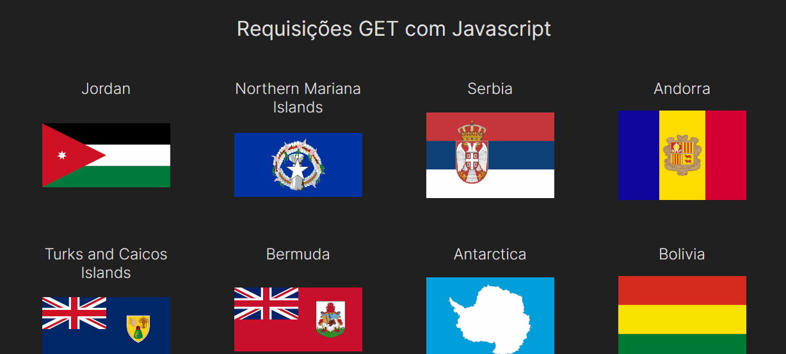
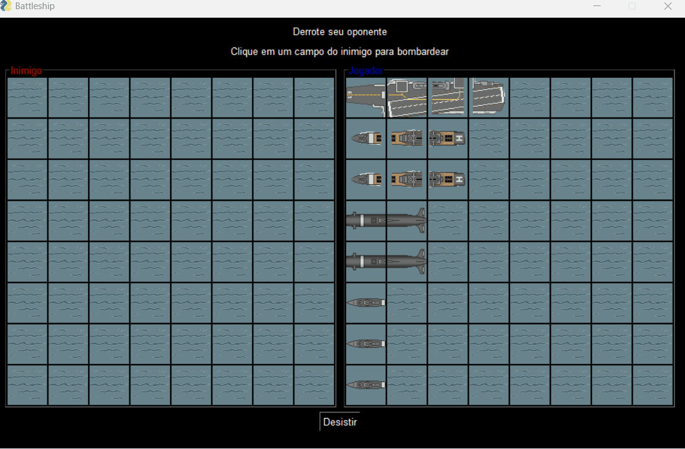
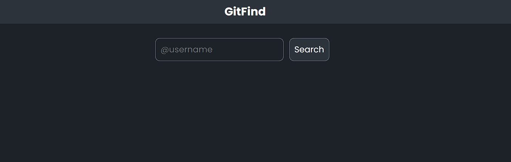

Desenvolvedor front end
Alguns dos meus projetos
Cursando Sistemas de Informação (SI) e Análise e Desenvolvimento de Sistemas (ADS), desenvolvi projetos pessoais e curriculares com conhecimentos em consumo de API's, como o projeto de Países e suas bandeiras, utilizando neste projeto, HTML5, CSS3 e JavaScript assíncrono, consumindo uma API externa.
Também desenvolvi em conjunto com minha equipe um projeto de batalha naval, utilizando Python com arquitetura MVC e PySimpleGUI.
Fiz também o projeto BitCent, uma aplicação utilizando o framework NextJs que é o framework do React, e o framework CSS TailwindCSS. A aplicação conta também com login via autenticação com o Google Firebase.
Consumi também a API pública do GitHub e usando javascript assíncrono e a biblioteca ReactJs, você pode consultar perfis do github pelo usuário e verificar de uma maneira rápida os seus repositórios públicos.